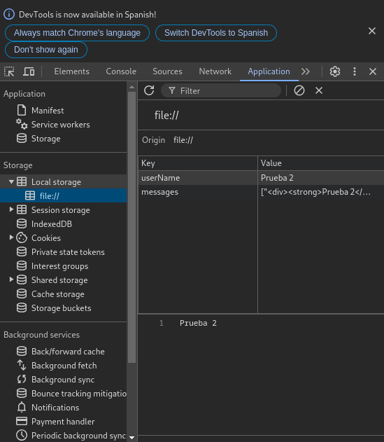

Las conexiones disponibles actualmente son las que se encuentran entre el 8080 y el 8085. Estas no serán privadas
Al no estar encriptadas las conversaciones se pueden rastrear.
Esta política viene de la necesidad de una conexión sencilla entre los integrantes de una misma wifi. No hay solución, disculpen.
No, al iniciar sesión estableciste un nombre que se ha almacenado en tu ordenador. Para eliminarlo has de borrar el local storage pero se perderán las conversaciones.
Para borrar el local storage dirígete a las herramientas de desarrollador, pulsa en Aplicación y en Local Storage
Borra todas las conversaciones de Start Chat almacenadas en su memoria local
Este botón marca como leídos todos los mensajes y establece el contador a cero.